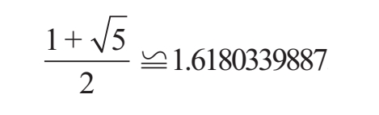
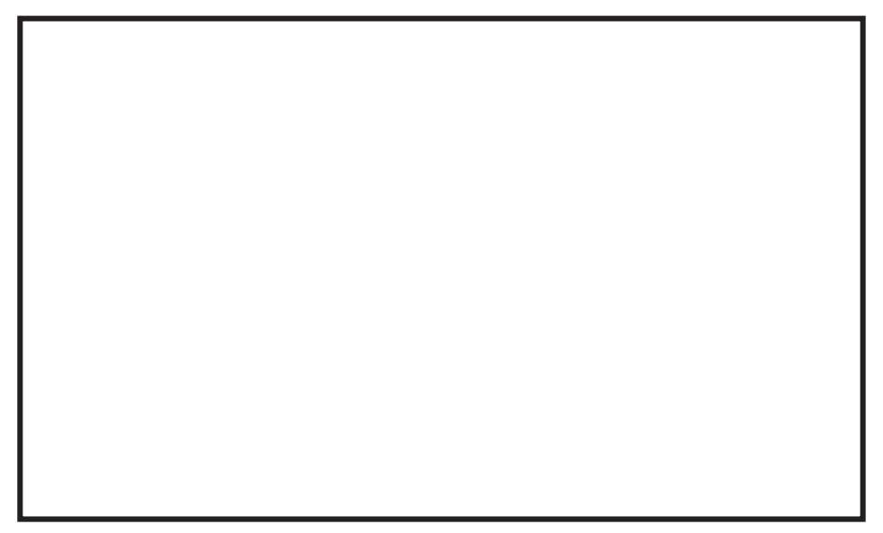
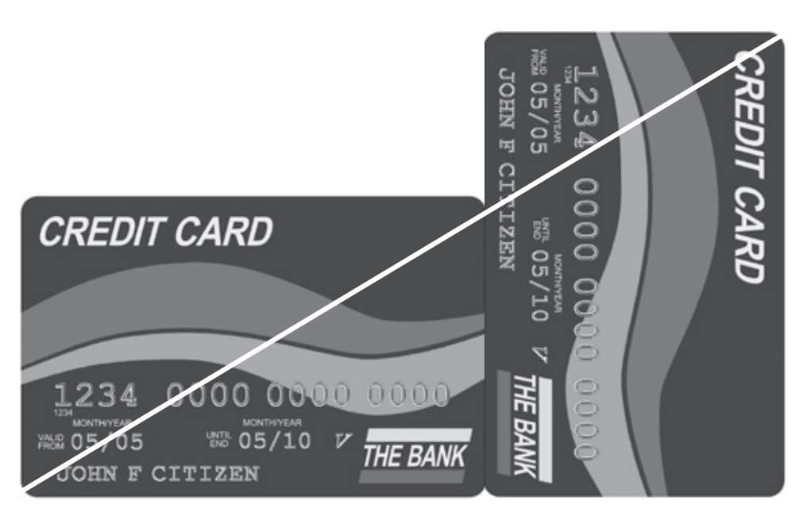

比例恰当的事物让人感到愉悦。
——圣托马斯·阿奎那（1225—1274）
向日葵花盘上籽实的排列、蜗牛壳上优美的螺线和银河系的螺旋结构，这三样看似毫无关联的自然事物有着怎样的共同特点？从维特鲁威到勒·柯布西耶，从达·芬奇到萨尔瓦多·达利，在这些伟大的艺术家和建筑师的作品中，隐藏着什么相同的几何原理？虽然这两个问题看上去不可思议，但答案仅仅是一个简单的数字。许多个世纪以来，这个数字一直为人们所熟知，它不断出现在各种自然事物和艺术作品中，因此就有了诸如“神圣比例”“黄金比例”“黄金数”这样的名字。要想完整地写出黄金比例几乎不可能，不是因为它的数值极大（其实它只大于1，小于2），而是因为它由无穷多的数字组成，而且这些数字没有特定的重复规律。既然如此，我们就必须使用数学符号把它表示出来，这样处理起来会更加方便：

在本章的后半部分我们将会看到这个数学表达式的求证方法，但在此之前我们必须承认，至少乍看上去，黄金比例并没有给人留下深刻的印象。然而明眼人在看到5的平方根后就会意识到不同寻常之处。和其他许多数字一样，5的平方根拥有的一系列性质让它获得了一个听上去不怎么舒服的名字——“无理数”。无理数是一个特殊的集合，我们在后面也会对其进行详细的讨论。
下面让我们以几何图形为例试着求出黄金比例的近似值，通过这种方式来寻找它那看似神圣的性质。为此我们画一个矩形，该矩形的长等于宽乘以1.618。它的邻边之比就是黄金比例（或至少是黄金比例的近似值）。如下图所示：

人们把具有以上性质的矩形称为“黄金矩形”。第一眼看过去，它似乎是一个非常标准的矩形。不管怎样，让我们先用两张信用卡来做一个简单的实验。将两张信用卡分别水平和垂直放置，底边对齐后并排在一起。如下页图所示：

如果我们在水平放置的信用卡上画一条对角线并将其延伸，那么就会发现这条线恰好准确到达了另一张信用卡的右上角。如果我们用两本大小相同的书来做同样的实验（最好是科技类图书或口袋书），很有可能得到相同的结果。只有两个一样大的黄金矩形才具有这个性质。而且平常我们看到的许多矩形物体似乎都是按照黄金比例设计而来。这会不会仅仅是巧合？有这种可能，但或许还有其他解释。黄金矩形之所以在我们生活中随处可见是出于某种原因，这些黄金矩形和其他拥有黄金比例的几何图形特别令人赏心悦目。如果你也同意这种说法，那么恭喜，你与历史上许多著名的画家和建筑师的观点相同。我们会在本书第四章看到与这一问题有关的更多内容。在数学上，人们习惯用希腊字母“Φ”（Phi）来表示黄金比例，而且“Φ”还是杰出的古典建筑师菲狄亚斯（Phidias）希腊名字的首字母，这绝非巧合。